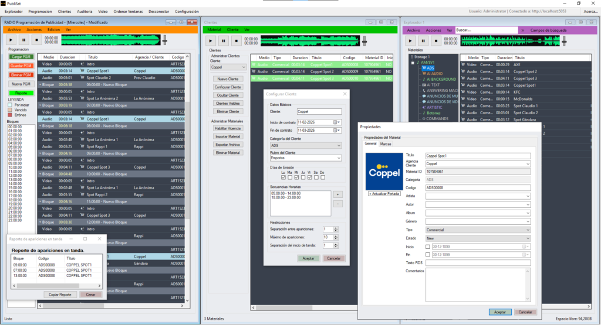

PubliSat es una herramienta diseñada para emisoras que utilizan sistemas como Dinesat o HDX, permitiendo gestionar programación comercial, materiales y contenidos de forma rápida y ordenada.
Su interfaz está pensada para ser familiar y simple al usuario.
Puntos fuertes
- ✔ Integración directa con Dinesat y HDX
- ✔ Interfaz similar a sistemas conocidos (no hay curva de aprendizaje)
- ✔ Gestión centralizada de clientes, materiales y programación
- ✔ Automatización de tareas repetitivas
- ✔ Compatible con audio, video y noticias
Funciones principales
- Editor externo configurable para audio, video o texto
- Agregar materiales a múltiples tandas simultáneamente
- Modificación masiva de contratos y fechas
- Lista de apariciones de materiales en programación
- Importación y exportación (TXT, CSV, XML)
- Guardado automático
- Cálculo de duración por tanda
- Bloques organizados por horario
- Búsqueda avanzada por múltiples campos
- Control de fechas de contrato
- Asignación por días, horarios y rubros
- Inserción automática inteligente en programación
Intefaz

Disponible en versiones para audio, video y noticias.
Contáctese por su prueba gratuita por 30 días.